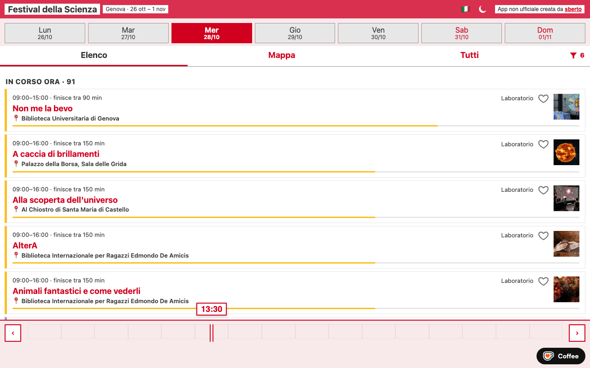
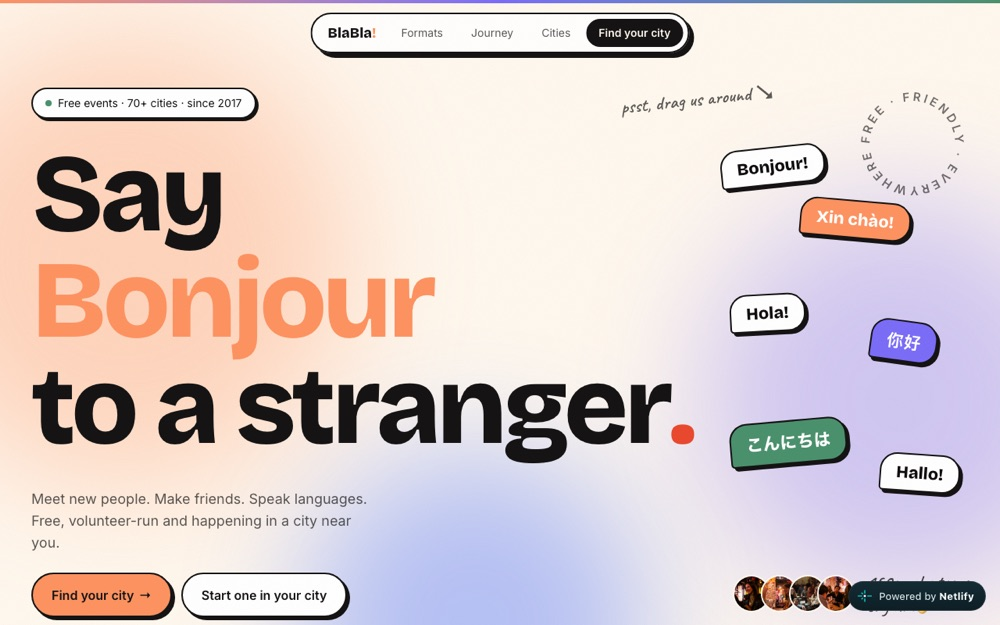

Software developer
I write code, mostly in Erlang and Elixir, and I have an M.Sc. in theoretical physics. I work as a developer at Prima.

An unofficial app for the Festival della Scienza in Genoa (26 Oct – 1 Nov). Browse events by day as a list or on a map, filter them, see what is on right now, and save your favourites. Works on mobile and has a dark mode.

A website for BlaBla, a free, volunteer-run language exchange: meet new people, make friends and practise languages at events in 70+ cities.